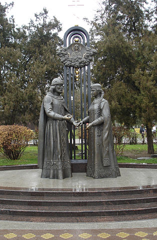
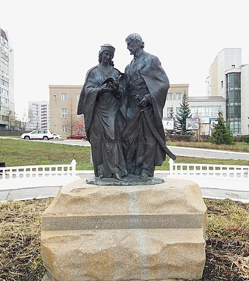

Композиции с фигурами этих святых устанавливаются в российских городах с 2009 года в рамках Общенациональной программы «В кругу семьи», созданной по благословению Патриарха Московского и всея Руси Алексия II в 2004 году. Ижевск стал 10 городом принявшим марафон этого социального проекта.
Цель проекта, по словам президента программы Александра Ковтунца, «создание положительного образа семейных ценностей, верных и целомудренных отношений, любви и преданности в браке, рождение и воспитание детей в духе любви к Родине».
Строительство памятников и их открытие приурочиваются к празднованию Дня Петра и Февронии, 8 июля. Первый памятник Петру и Февронии — «Союз любви — мудрый брак» — появился 8 июля 2008 года на их родине — в Муроме напротив ЗАГСа.
Всего скульптурных композиций «Святые благоверные князь Петр и княгиня Феврония Муромские» семь. Это сцены из Жития Святых, воссозданных скульптором Константином Чернявским. В Омске, например, Петр и Феврония держат голубей, в Архангельске - сцена возращения влюбленных в Муром из изгнания. А в Ижевске скульптура называется «Петр и Феврония у ладьи».
| Памятники Петру и Февронии в других городах | |
|  |  |
| Ростов-на-Дону | Ульяновск |